【AI白皮书】AI网关¶

6.1 网关的演进历程¶
是什么在推动软件架构的演进呢？业务规模。业务从互联网、移动互联网以及即将到来的万物互联，其规模仍然在高速增长，也就意味着软件架构的复杂度也会越来越高，网关的特性也会越来越多。越来越复杂、越来越智能。
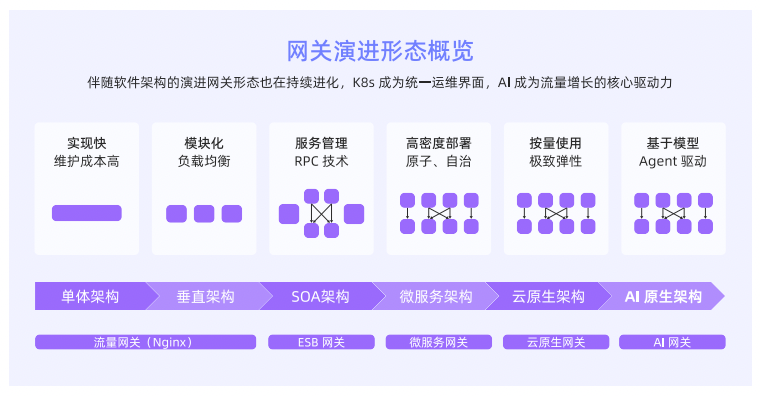
6.1.1 流量网关¶
代表软件是Nginx，将客户请求分配到不同的服务器上，从而实现流量负债均衡，避免单点故障，确保服务的稳定性和连续性。
6.1.2 ESB网关¶
ESB，企业服务总线，通过集中管理消息路由、转换和安全，实现服务的快速部署和高效运作。
6.1.3 微服务网关¶
微服务网关可以实现负载均衡、限流、熔断、降级、身份验证等功能，通过统一入口管理和优化各微服务间的交互。Spring Cloud Gateway是一个广泛应用的微服务网关。
6.1.4 云原生网关¶
云原生网关是伴随K8S的广泛应用而诞生的一种创新网关。既能有流量网关的特性来处理海量请求，又具备微服务网关的特性来做服务发现与服务治理，同时要求网关也具备弹性扩缩容能力解决容量调度问题。
6.1.5 AI网关¶
之前的几种类型网关处理的流量基本是以HTTP、RPC为主，多采用长连接，长连接采用request-response模式。AI采用的协议以SSE/Websocket为主，虽然也是长连接，但跟request-response模式相比，Server可以主动发送数据给Client，Websocket更是一种全双工协议，主要在语音类的实时通讯场景中使用。
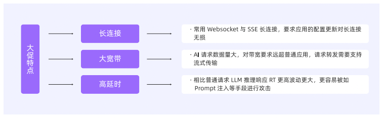
AI场景对网关有新诉求，比如：多模型代理、智能路由、模型增强、安全防护、流式传输、无损变更等。
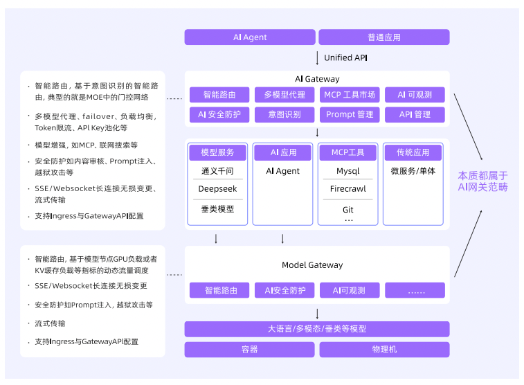
Higress网关已经在阿里云内部大规模生产落地，可以访问项目地址了解：https://higress.ai/
6.1.6 API网关¶
从流量网关，再到AI网关，都是API网关在不同软件架构下的网关形态。HTTP/gRPC/Dubbo/Websocket都可以称之为API，MCP、A2A也可以称之为API。
6.2 AI网关的定义、特点与应用场景¶
AI网关是提供多模型流量调度，MCP和Agent管理，智能路由和AI治理的下一代网关。AI网关不仅完整继承了API网关的通用能力，如安全认证、路由转发、流量控制等，也演进出了大模型Fallback、大模型负载均衡、Token级别的精细化流量管控、语义化缓存、内容安全、联网搜索、MCP协议转化和管理、工具精选和搜索效果优化等面向AI场景的能力。
6.2.1 AI应用的流量特征¶
高延时
大带宽与流式传输
长连接
API驱动
6.2.2 AI网关的应用场景¶
1、模型服务提供商（MaaS）的接入层
2、AI应用的开发网关
3、企业内部的中央AI网关
4、MCP工具生态的统一入口
5、构建企业AI能力货币化的统一开放平台
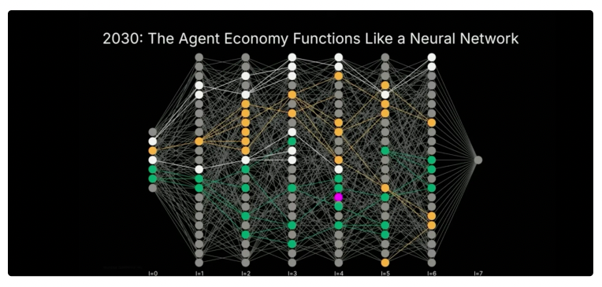
6.3 AI网关的核心能力和最佳实践¶
6.3.1 核心能力¶
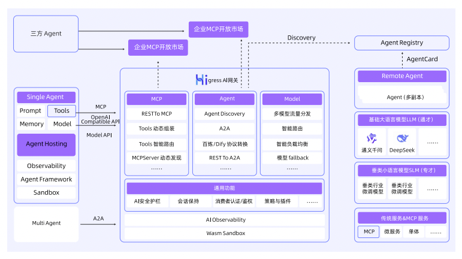
1、多模型代理
2、多模型回退/容灾
3、消费者认证
4、内容安全防护
5、Token限流
6、语义缓存
7、可观测性
8、MCP代理
9、工具的动态组装
10、工具的智能路由
6.3.2 最佳实践¶
AI网关的原子能力可以总结为面向LLM、Agent、MCP和AI开放平台四大类，这里总结了8类常见的实践，多模型代理、消费者认证、内容安全与防护、Token限流、语义缓存、多模型容灾、多模型可观测和AI开放平台。
1、多模型代理
需求场景：
文本、图像、音频、3D等多模态业务场景。
企业不同垂直领域，需要调用专用模型。
任务需要多个模型分工协作。
医疗机构，处理患者数据使用私有模型，其他和患者无关使用通用模型。
核心价值：
业务需求适配：根据业务复杂性或性能要求选择不同模型。
数据隐私与合规性：在处理敏感数据时，可能需要切换到符合特定法规的模型，确保数据处理的安全性。
性能优化：根据实时性能需求，可能会切换到更快的模型以减少延迟。
成本与性能平衡：根据预算动态选择性价比最优的模型。
领域特定需求：针对特定领域（如法律、医学），可能需要切换到在相关领域微调过的模型，以提高推理准确性。
容灾与故障转移：主模型服务异常时快速切换备用模型。
2、消费者认证
需求场景：
企业为不同部门提供共享的大模型服务时，通过API Key区分租户，确保数据隔离和权限管控。
企业内部不同角色差异化访问模型能力，比如金融企业限制风险评估模型仅限风控部门调用。
核心价值：
身份可信：确保请求方为注册/授权用户或系统。
风险拦截：防止恶意攻击、非法调用与资源滥用。
合规保障：满足数据安全法规及企业审计要求。
成本控制：基于鉴权实现精准计费与API配额管理。
3、内容安全防护
需求场景：
金融行业审核用户输入的金融交易指令、投资咨询内容。
医疗行业电子病历生成内容防止泄露患者隐私。
社交媒体实时审核用户发布的内容拦截涉黄、暴恐、虚假信息。
政务服务审核公众提交的政务咨询内容防止恶意攻击或敏感信息传播。
电商直播审核商品描述、直播弹幕内容拦截虚假宣传、违禁品信息。
核心价值：
防止攻击：验证输入可以阻止恶意提示注入，防止模型生成有害内容。
维护模型完整性：避免输入操纵模型，导致错误或偏见输出。
用户安全：确保输出没有有害或误导性内容，保护用户免受不良影响。
内容适度：过滤掉不适当的内容，如仇恨言论或不雅语言，特别是在公共应用中。
法律法规：确保输出符合法律和伦理标准，尤其在医疗或金融领域。
4、Token限流
需求场景：10000人企业，只需要配置7000人硬件资源，超出部分进行限流。限制Token数量来减少垃圾请求或攻击，以免受到资损。
核心价值：
成本管理：LLM的费用通常基于Token数量计算，限流帮助用户避免超支。例如，服务提供商可能按Token使用量提供不同定价层。
资源管理：LLM需要大量计算资源，限流防止系统过载，确保所有用户都能获得稳定性能，尤其在高峰期。
用户分层：可以基于ConsumerId或者API Key进行Token限流。
防止恶意使用：通过限制Token数量来减少垃圾请求或攻击。
5、语义缓存
需求场景：
客服系统、智能助手等，用户常提出重复问题，缓存常见问题的回答。
法律文件分析、教育教材解析，需对通一长文本多次提问，缓存上下文。
数据分析与生成场景，对相同数据集的多次分析结果缓存。
RAG缓存知识库检索结果。
核心价值：
提高效率：如果相同的输入反复出现，缓存可以避免重复运行模型，从而加快响应速度，特别是在处理常见问题时。
降低成本：减少模型调用次数可以节省计算资源，尤其对大型模型来说成本较高。
保持一致性：缓存确保相同输入产生相同输出，有助于测试和合规性场景。
6、多模型容灾
需求场景：
大模型生成不稳定。
使用者请求参数有误导致连接超时或中断。
请求频次过高触发限流。
依赖服务故障。
核心价值：
当主LLM服务因为各种原因出现异常，不能提供服务时，网关侧可以快速将请求Fallback到配置的其他LLM服务，虽然可能推理质量有所下降，但是保证了业务的连续性，争取了排查LLM服务的时间。
7、多模型可观测
需求场景：成本控制和稳定性场景。
核心价值：AI网关通过支持在应用、网关、后端LLM服务上开启OT服务来进行全链路的跟踪，通过TracId来串联各个地方的日志、请求参数等信息。除了提供QPS、RT、错误率等传统观测指标，AI网关还能集成更多元化的监控指标：
基于Consumer的Token消耗统计。
基于模型的Token消耗统计。
限流指标：每单位时间内有多少次请求因为限流被拦截，限流消费者统计（是哪些消费者在被限流）。
缓存命中情况。
安全统计：风险类统计、风险消费者统计。
8、AI开放平台
需求场景：工具提供方、Agent开发者、安全合规、财务运营等角色各自为政，产生了能力目录分散、上架流程不一致、权限与配额难统一、成本难计量与分摊、内容安全也难以落实到每一次调用等一系列问题。
核心价值：
AI开放平台管理后台（for管理者/运营）：在这里将底层的模型服务、MCP Server、Agent等多样化的AI能力，以API的形式轻松打包成标准化的“AI产品”，并配上完善的文档、示例，最终一键发布到门户。
AI开放平台门户（for开发者）：门户是面向内外开发者的“店面”。开发者可以在此完成开发者注册、创建消费者、获取凭证、浏览和订阅AI产品、在线测试，并清晰地监控自己的调用状态和成本。
AI网关：作为Higress AI社区的子项目，Higress AI网关承载所有AI调用的认证、安全、流控、协议转换以及可观测性等能力。
Nacos：Nacos作为MCP Registry为门户提供全面的MCP Server元信息托管，版本管理，服务发现，密钥托管等能力。通过动态服务发现和动态配置变更实现系统灵活扩展和变更，通过Nacos MCP Router智能路由简化多MCP服务管理和调用。在日常开发测试的场景中，通过动态Prompt变更实现高效的MCP服务调试，在生成环境中通过多版本管理实现灰度发布，通过加密存储和动态配置变更提升安全能力。
6.4 使用AI网关快速构建AI应用¶
本文基于Higress、通义千问以及ChatGPT-Next-Web，演示如何逐步搭建一个体系完整的AI应用。
架构图：
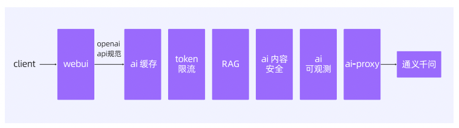
6.4.7 其他¶
Prompt工程相关插件
Prompt模版，定义模版指定参数进行访问
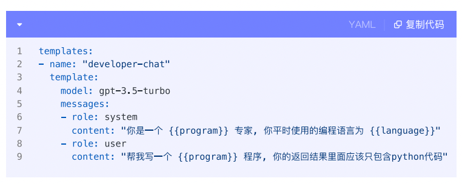

Prompt装饰器，在请求之前和之后插入message
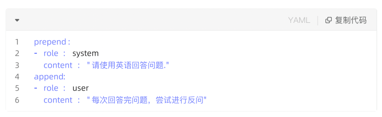
AI请求/响应智能转换
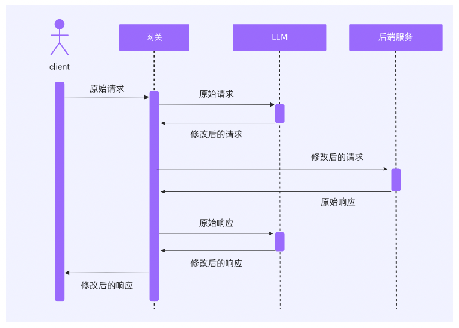
插件配置
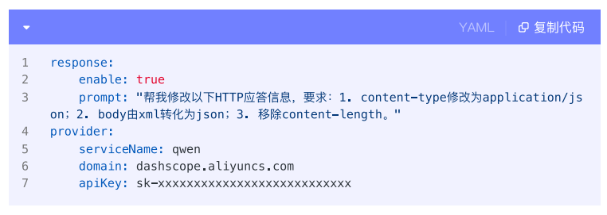
插件效果
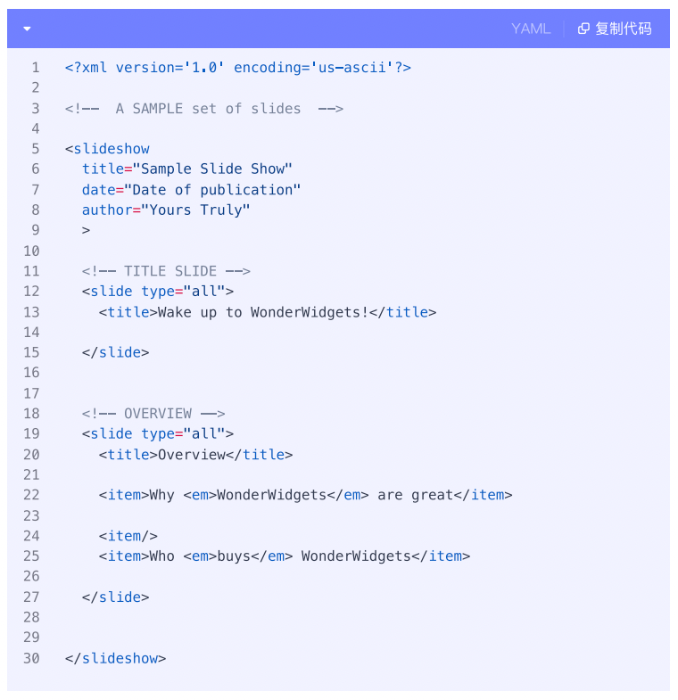
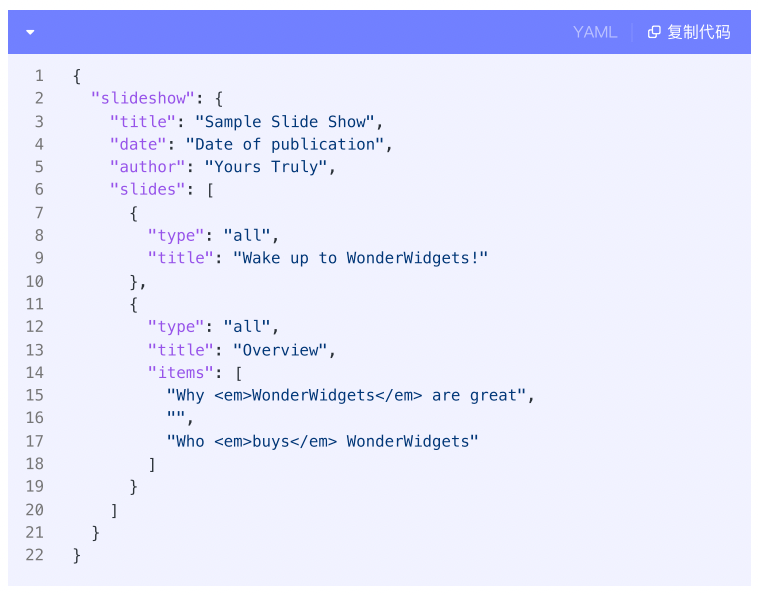
6.5 API和Agent的货币化¶
AI应用正在越过“聊天即产品”的早期阶段，进入以任务完成为目标的Agent时代。
6.5.1 AI开放平台¶
AI网关负责抽象并统一上游推理与下游工具，提供稳定的路由、编排与策略面；协议层对工具与资源进行自描述，收敛参数、错误与权限语义，消弭供应商差异；在此基础上，以API货币化为抓手，构建可计量、可计费、可分成、可审计的商业框架，最终形成Agent开放平台或Agent市场，建立“供给-分发-变现-治理”的闭环。
开源项目HiMarket AI开放平台：
https://github.com/higress-group/himarket
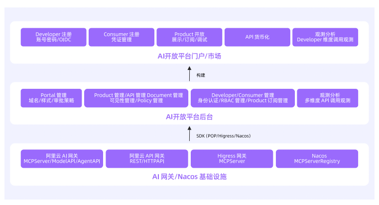
6.5.2 AI网关¶
AI网关是AI开放平台的底层基础设施。
6.5.3 API货币化¶
首先让一切可被度量，随后基于这些指标设计价格计划。